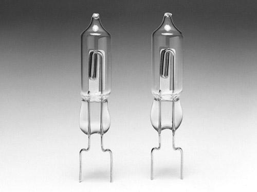
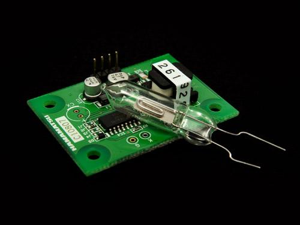

Hamamatsu R2868 is a UVTRON ultraviolet ON/OFF detector that makes use of the photoelectric effect of metal and the gas multiplication effect. It has a narrow spectral sensitivity of 185 nm to 260 nm, being completely insensitive to visible light. Unlike semiconductor detectors, it does not require optical visible-cut filters, thus making it easy to use.
In spite of it's small size, the R2868 has wide angular sensitivity (directivity) and can reliably and quickly detect weak ultraviolet radiations emitted from flame due to use of the metal plate cathode (eg. it can detect the flame of a cigarette lighter at a distance of more than 5m.)
The R2868 is well suited for use in flame detectors and fire alarms, and also in detection of invisible discharge phenomena such as corona discharge of high-voltage transmission lines.
Model:SEN137B2B

Sensor only, you might need C10807 series as in above picture for R2868 operation, you can get it here.
| Item | Minimum | Typical | Maximum |
|---|---|---|---|
| Operate voltage | 3.0V | 3.3V | 3.6V |
| Communication Protocol | I2C and SPI | ||
If you have questions or other better design ideas, you can go to our forum or wish to discuss.
| Revision | Descriptions | Release |
|---|---|---|
| Flame sensor UVTRON - R2868 | Initial public release | Jun 04, 2010 |
How to buy Flame sensor UVTRON - R2868: http://www.seeedstudio.com/depot/flame-sensor-uvtron-r2868-p-637.html?cPath=84_89
This documentation is licensed under the Creative Commons Attribution-ShareAlike License 3.0 Source code and libraries are licensed under GPL/LGPL, see source code files for details.
Links to external webpages which provide more application ideas, documents/datasheet or software libraries
Copyright (c) 2008-2016 Seeed Development Limited (www.seeedstudio.com / www.seeed.cc)